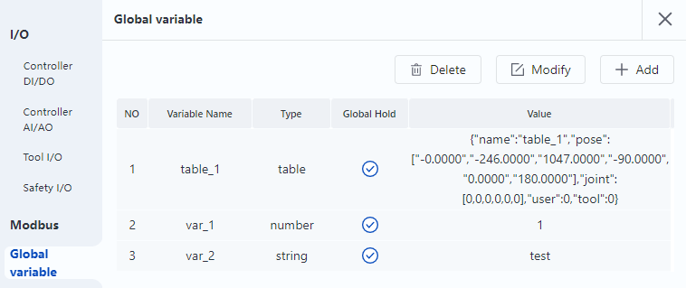

Variable and data type
Variables are used to store values and pass values as parameters or return values as results. Variables are assigned by "=".
In Lua, local variables (valid for the current function) are declared explicitly using "local", and the functioning scope of local variables is from the start of the declaration to the end of the function.
Variables that are not declared explicitly with "local" are script-level variables (valid for the current script file) by default, and the functioning scope of the script-level variable is within the single script file.
In addition, you can set controller-level global variables via Monitor > Global Variables page in DobotStudio Pro, which can be called directly from different script files within the same controller.

Example 1 mainly illustrates the differences of the functioning scope between local variables and script-level variables.
function func() -- Define a function, and print a and b when running
local a = 1 -- Local variable
b = 2 -- Script-level variable
print(a)
print(b)
end
func() -- Print a and b
print(a) --> nil(Called outside the functioning scope of the variable and printed as nil)
print(b) --> 2
Example 2 mainly illustrates that local variables can have the same name as script-level variables, but only take effect within functions. The code blocks for process control (loop, conditional judgment) such as "do/end" also belong to functions.
a = "a"
for i=10,1,-1 do
do
local a = 6 -- Local variable
print(a) --> 6, the variable called within the statement block is the local variable "a"
end
print(a) --> a, the variable called outside the statement block is the script-level variable "a"
Example 3 mainly illustrates the differences of the functioning scope between global variables and another two variables, as well as the global hold function of global variables.
-- src0.lua file for project 1
-- Suppose two global variables g1 and g2 have been added to the global variables page
-- g1 is non-global hold variable, value: 10
-- g1 is global hold variable, value: 20
local a = 1
b = 2
print(a) --> 1
print(b) --> 2
print(g1) --> 10
print(g2) --> 20
g1 = 11 -- Assign a value to non-global hold variable
g2 = 22 -- Assign a value to global hold variable
print(g1) --> 11
print(g2) --> 22
-- src0.lua file for project 2
-- Project 2 runs after Project 1
print(a) --> nil
print(b) --> nil
print(g1) --> 10(non-global hold variable restores to the value before modification of project 1)
print(g2) --> 22(global hold variable becomes the value after the modification of project 1)
Variable names can be a string made up of letters, underscores and numbers, which cannot start with a number. The keywords reserved by Lua cannot be used as a variable name.
For Lua variables, you do not need to define their types. After you assign a value to the variable, Lua will automatically judge the type of the variable according to the value. Assigning a different type of value from the current type to a variable in the script will change the type of the variable. However, the type of variables set on Monitor > Global variables page cannot be changed, and the type of the assigned value must be the same as the type when the variable was created, otherwise the controller will report an error when running the script.
Lua supports a variety of data types, including number, boolean, string and table. The array in Lua is a type of table.
There is also a special data type in Lua: nil, which means void (without any valid values). For example, if you print an unassigned variable, it will output a nil value.
Number
The number in Lua is a double precision floating-point number and supports various operations. The following formats are all regarded as a number:
- 2
- 2.2
- 0.2
- 2e+1
- 0.2e-1
- 7.8263692594256e-06
Boolean
The boolean type has only two optional values: true and false. Lua treats false and nil as false, and others as true including number 0.
String
A string can be made up of digits, letters, and underscores. A string can be represented in three ways：
- Characters between single quotes.
- Characters between double quotes.
- characters between "[[" and "]]".
When performing arithmetic operations on a string of numbers, Lua attempts to convert the string of numbers into a number.
Lua provides many functions to support the operations of strings.
| Function | Description |
|---|---|
| string.upper (argument) | Convert to uppercase letters |
| string.lower (argument) | Convert to lowercase letters |
| string.gsub (mainString, findString,replaceString,num) | Replace characters in a string. MainString is the source string; findString is the characters to be replaced; replaceString is the replacement characters; and num is the number of replacement (replace all if num is not set) |
| string.find (str, substr, [init, [end]]) | Search for the specified content substr in a target string str. If a matching substring is found, the start and end indexes of the substring are returned, and if none exists, nil is returned |
| string.reverse(arg) | Reverse the string |
| string.format(...) | Return a formatted string similar to printf |
| string.char(arg) and string.byte(arg[,int]) | char: convert integer numbers to characters and concatenate them byte: convert characters to integer values (characters can be specified (the first character by default)) |
| string.len(arg) | Get the length of a string |
| string.rep(string, n) | Copy the string, and n indicates the number of replication |
| .. | Link two strings |
| string.gmatch(str, pattern) | It's an iterator function. Each time this function is called, it returns the next substring found in the str that matches the pattern description. If the substring which matches pattern is not found, nil is returned |
| string.match(str, pattern, init) | Search for the specified content that matches the description of pattern in a target string str (Only the first matching in the source str is found). init is an optional parameter that specifies the starting index for the search, which defaults to 1. On successful matching, all capture results in the matching expression will be returned. If no capture flag is set, the entire matching string is returned. When there is no successful matching, return nil |
| string.sub(s, i [, j]) | Intercept strings. s is the source string to be truncated; i is the start index; j is the end index (-1 by default), indicating the last character. |
Example:
str = "Lua"
print(string.upper(str)) --Convert to uppercase letters, and print the result: LUA
print(string.lower(str)) --Convert to lowercase letters, and print the result: lua
print(string.reverse(str)） --The string is reversed, and print the result: aul
print(string.len("abc")) --Calculate the length of the string abc, and print the result: 3
print(string.format("the value is: %d",4)) --Print the result: the value is:4
print(string.rep(str,2)) --Copy the string twice and print the result: LuaLua
string1 = "cn."
string2 = "dobot"
string3 = ".cc"
print("Connect strings: ",string1..string2..string3) --Use..to connect strings, and print the result: Connect strings: cn.dobot.cc
string1 = [[aaaa]]
print(string.gsub(string1,"a","z",3)) --Replace in a string, and print the result: zzza
print(string.find("Hello Lua user", "Lua", 1)) --Search for Lua in the string, return the starting and ending index of the substring, and print the result: 7, 9
sourcestr = "prefix--runoobgoogletaobao--suffix"
sub = string.sub(sourcestr, 1, 8) --Get the first to eighth characters of the string
print("\n truncate", string.format("%q", sub)) --Print: truncate "prefix--"
Table
A table is a group of data with indexes.
- The simplest way to create a table is using {}, which creates an empty table. This method initializes the table directly.
- A table is actually an associative array. The index of an array can be any type of value except nil.
- The size of a table is not fixed and can be expanded as required.
- The symbol "#" can be used to obtain the length of a table.
tbl = {[1] = 2, [2] = 6, [3] = 34, [4] =5}
print("tbl length", #tbl) -- Print the result: 4
Lua provides many functions to support the operation of tables.
| Function | Description |
|---|---|
| table.concat (table [, sep [, start [, end]]]) | "concat" is the abbreviationn of "concatenate". The table.concat () function lists all elements of the specified array from start to end, separated by the specified separator (sep) |
| table.insert (table, [pos,] value) | Insert an element at the specified position (pos) in the table. pos is an optional parameter, which defaults to the end of the table. |
| table.remove (table [, pos]) | Return the element in the table at the specified position (pos). The element that follows will be moved forward. pos is an optional parameter and defaults to the table length, that is, deleting from the last element. |
| table.sort (table [, comp]) | The elements in the table are sorted in an ascending order. |
Example 1:
fruits = {} --Initialize the table
fruits = {"banana","orange","apple"} --Assign for the table
print("String after concatenation",table.concat(fruits,", ", 2,3)) --Get the element of the specified index from the table and concatenate them, String after concatenation orange, apple
--Insert element at the end
table.insert(fruits,"mango")
print("The element with index 4 is ",fruits[4]) --Print the result: The element with index 4 is mango
-- Insert the element at index 2
table.insert(fruits,2,"grapes")
print("The element with index 2 is ",fruits[2]) --Print the result: The element with index 2 is grapes
print("The last element is",fruits[5]) --print the result: The last element is mango
table.remove(fruits)
print("The last element after removal is ",fruits[5]) --Print the result: The last element after removal is nil
Example 2:
fruits = "banana","orange","apple","grapes"}
print("Before")
for k,v in ipairs(fruits) do
print(k,v) --Print the result: banana orange apple grapes
end
--In ascending order
table.sort(fruits)
print("After")
for k,v in ipairs(fruits) do
print(k,v) --Print the result: apple banana grapes orange
end
Array
An array is a collection of elements of the same data type arranged in a certain order. It can be one-dimensional or multidimensional. The index of an array can be represented using an integer, and the size of the array is not fixed.
- One-dimensional array: The simplest array, of which the logical structure is a linear table.
- Multi-dimensional array: An array contains an array, or the index of a one-dimensional array corresponds to an array.
Example 1: One-dimensional array can be assigned or read through the for loop command. An integer index is used to access an array element. If the index has no value, the array returns nil.
array = {"Lua", "Tutorial"} --Create a one-dimensional array
for i= 0, 2 do
print(array[i]) --Print the result: nil Lua Tutorial
end
In Lua, array indexes start with 1 or 0. Alternatively, you can use a negative number as an index of an array.
array = {}
for i= -2, 2 do
array[i] = i*2+1 --Assign values to a one-dimensional array
end
for i = -2,2 do
print(array[i]) --Print the result: -3 -1 1 3 5
end
Example 2: An array of three rows and three columns
-- initialize an array
array = {}
for i=1,3 do
array[i] = {}
for j=1,3 do
array[i][j] = i*j
end
end
-- Access an array
for i=1,3 do
for j=1,3 do
print(array[i][j]) --Print the result: 1 2 3 2 4 6 3 6 9
end
end